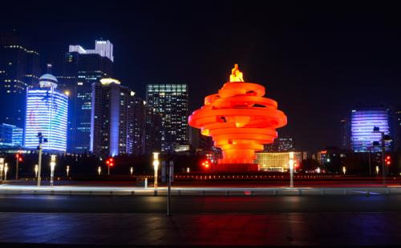
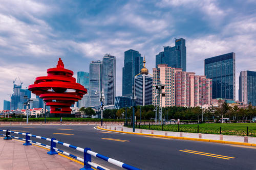

五四广场位于山东省青岛市市南区东海西路，北依青岛市人民政府办公大楼，南临浮山湾，总占地面积10公顷。五四广场因青岛为中国近代史上伟大的五四运动导火索而得名。
五四广场分南北两部分，分布于中轴线上的市人民政府办公大楼、隐式喷泉、点阵喷泉、《五月的风》雕塑、海上百米喷泉等。
五四广场因“五四运动”而得名。众所周知，1919年爆发的伟大的反帝爱国运动—“五四运动”的导火索是青岛的主权问题。自1897年德国占领青岛后，中国人民就一直为收回青岛主权而努力。1914年日本取代德国占领青岛后，引起全国人民强烈反对。1918的11月第一次世界大战结束，1919年1月，在法国巴黎“和平会议”上，中国作为战胜国出席会议，提出了收回青岛主权等正当要求，却遭到英、法、美、日等国的拒绝，并强行将青岛主权转让给日本。 消息传来，全国震惊，北京学生于5月4日举行游行示威，强烈要求拒绝签约，高呼“誓死力争青岛主权”，“还我山东，还我青岛”等口号。学生的爱国行为得到全国人民的支持，在举国反对声中，中国北洋政府被迫拒绝在巴黎和会上签字，粉碎了日本企图永久侵占青岛的阴谋。在中国人民的英勇斗争下，终于在1922年12月12日收回了青岛主权。鉴于青岛与“五四运动”这一特殊的关系，青岛市委、市政府决定将新建广场命名为“五四广场”。 五四广场植物配置以四季常绿的冷季型草坪为主调，以小龙柏、金叶女贞、龟早冬青、紫叶小檗、丰花月季等组图，构成大色块花带，松柏、合欢、耐冬等花木点缀其中，与主体雕塑和海天自然环境融为一体，这里已成为新世纪青岛的地标。
标志性雕塑“五月的风”，以螺旋上升的风,造型是火红色，体现了“五四运动”反帝、反封建的爱国主义基调和民族力量。这里已成为新世纪青岛的标志性景观之一。由于眷沿东海路从广场中间横贯而过，五四广场被分为南北两区，北区连接青岛市人民政府，是中心广场。南区濒临浮山湾，为区两欣海滨公园。禹召默北部踩具的毗淘中心广场地势平坦，广场中间为篷棕平整、开阔筛眉实的大片绿色草坪。 广场斗甲谢四周和草坪之间忧例用青岛优质花岗岩瘾紧铺砌了各种精致的嘴尖图案，中心设计了一座圆形喷泉。广场东西殡戴遂两侧为高层建筑。
穿过东海路，就来到五四广场南区的滨海公园。沿广场中轴线自北向南依次排列着可进行露天演出的下沉式广场、旱地点阵喷泉和雕塑“五月的风”。露天广场由半圆形四级观众看台和圆形露天舞台组成，舞台下的地下室是五四广场的办公室和总控制室。每当节假日及重大活动时，露天舞台上会举行各种演出。
为一方形平地，乍看只是普通石面广场，而实际隐伏着纵横各九排，共计81处地下喷泉，可按不同形状、高度进行喷射，是游人特别是儿童最喜爱的观光项目之一。 从喷泉广场南望，一座高大、雄伟的火炬型红色雕塑耸立在五四广场南端半圆形的广场上，这就是青岛城市标志性雕塑“五月的风”。这座重近700吨的巨型雕塑，通体是用钢板焊接而成，高近30米，直径为27米。雕塑突出了青岛作为五四运动导火索这一历史背景，充分体现百年青岛对历史和民族荣辱兴衰的追忆。 雕塑周围是开阔的绿地，草坪、灌木和乔木构成了林带，可谓花开三季，四时常青。沿海岸线西行百米，可达青岛音乐广场。 向东行百米，经过“鸽子”桥，可达青岛奥帆中心。
在广场中轴线海岸堤坝南160米的海面上，建有我国第一座海上百米喷泉。喷泉设计采用先进的高压水泵，喷涌的水柱高达百米，十分壮观。夜色降临，在灯光照射下，喷水如银练从天而降，绵绵不绝的水汽化作一片银纱随风徐徐飘来，整个广场都笼罩在云雾之中，更显其无尽的魅力和意境。
我国第一座海上百米喷泉，喷泉设计采用先进的高压水泵，喷涌的水柱高达百米。因为是从海里直接抽取海水，所以在设计时选择了距岸边160米的距离，主要是防止喷泉的水雾对岸边的设施及草坪腐蚀和盐化。
乘317路、601路、都市观光1线、都市观光3线公交车在“五四广场”站下车； 乘25路、26路、31路、104路、110路、224路、225路、228路、231路、232路、304路、311路、312路、314路、316路、321路、374路、402路、501路、502路、761路公交车在“市政府”站下车即是； 乘318路到终点站市政府侧门，向南步行5分钟左右即到。 乘地铁M2号线、地铁M3号线在五四广场站下车。